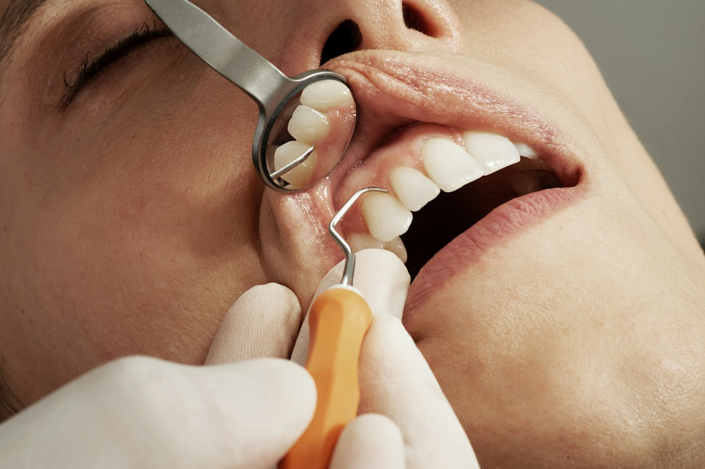
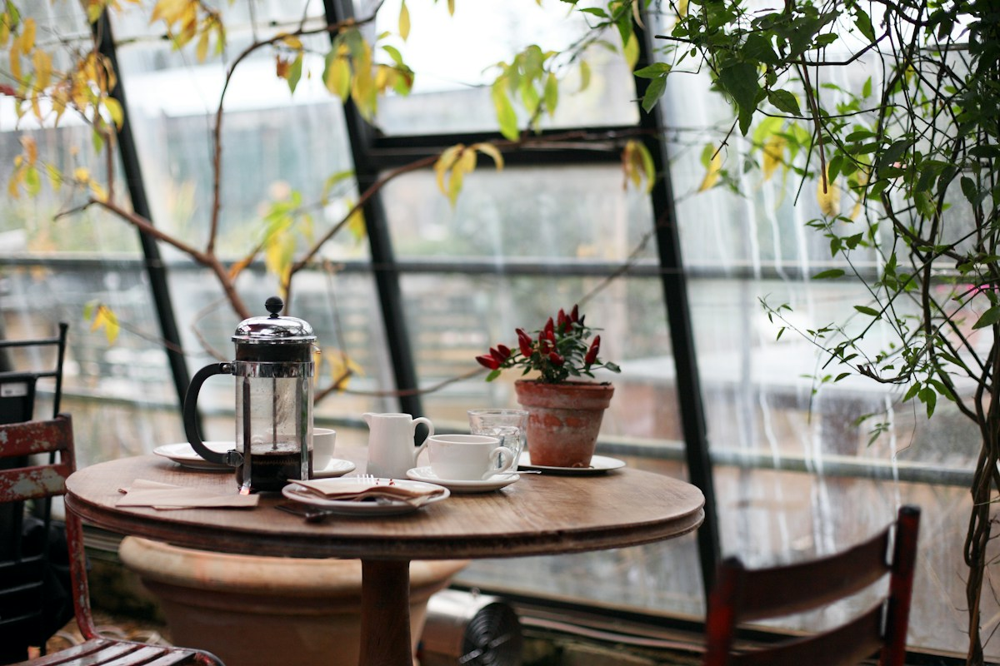

01 / الصحة
الرعاية الطبية
موقع رعاية طبية يعرض الخدمات والتخصصات ومعلومات التواصل بوضوح. تصميم هادئ ومتجاوب يسهّل الوصول إلى المعلومات.
أنا عبدالرحمن عمر حاجي، مصمم ومطور مواقع إلكترونية. أحوّل الأفكار إلى تجارب رقمية واضحة وسريعة ومتجاوبة، باهتمام بالتفاصيل وسهولة الاستخدام.


موقع رعاية طبية يعرض الخدمات والتخصصات ومعلومات التواصل بوضوح. تصميم هادئ ومتجاوب يسهّل الوصول إلى المعلومات.
سيرة رقمية تعرض المعلومات والمهارات والخبرات والمؤهلات في تصميم احترافي. أقسام المشاريع والتواصل تجعل التعرف على صاحب السيرة أسهل.

موقع يعرض قائمة القهوة والمشروبات والحلويات بصور جذابة. نبذة منظمة ومعلومات تواصل ضمن تصميم مريح يناسب هوية المقاهي.